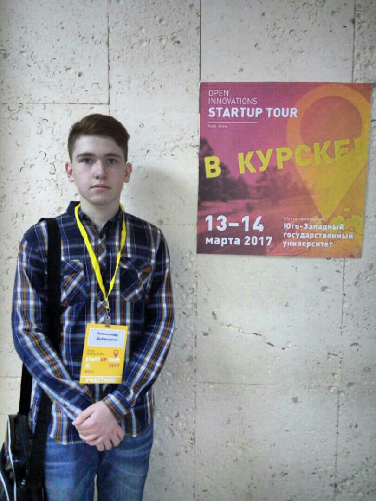

Николай II Александрович (6 мая 1868, Царское Село — 17 июля 1918, Екатеринбург) — Император Всероссийский, Царь Польский и Великий Князь Финляндский (20 октября 1894 — 2 марта 1917). Из императорского дома Романовых. Полковник (1892); кроме того, от британских монархов имел чины адмирала флота (28 мая 1908 года) и фельдмаршала британской армии (18 декабря 1915 года).
Правление Николая II было ознаменовано экономическим развитием России и одновременно ростом в ней социально-политических противоречий, революционного движения, вылившегося в революцию 1905—1907 годов и Февральскую революцию 1917 года; во внешней политике — экспансией на Дальнем Востоке, войной с Японией, а также участием России в военных блоках европейских держав и Первой мировой войне.
Николай II отрёкся от престола в ходе Февральской революции 1917 года и находился вместе с семьёй под домашним арестом в царскосельском дворце. Летом 1917 года по решению Временного правительства был вместе с семьёй отправлен в ссылку в Тобольск, а весной 1918 года перемещён большевиками в Екатеринбург, где в июле 1918 года был расстрелян вместе с семьёй и приближёнными.
Прославлен (вместе с женой и детьми) в лике святых Русской православной церковью как страстотерпец 20 августа 2000 года, ранее, в 1981 году, прославлен Русской зарубежной церковью как мученик.
© IT-ПАРК образовательный проект 2012-2018 itpark32.ru
я в вконтакте: https://vk.com/id196198280
